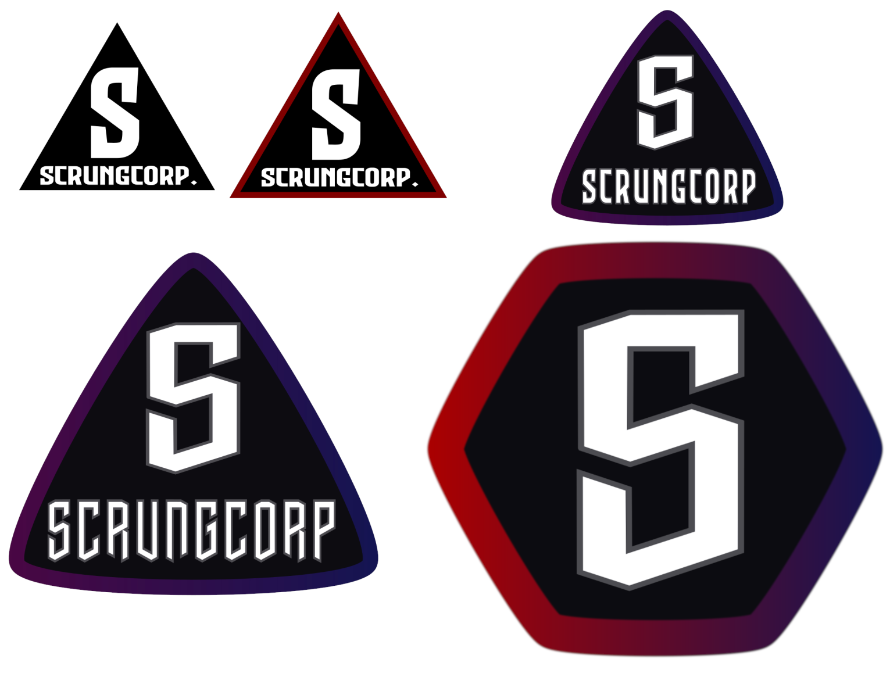
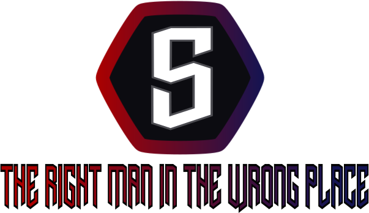

This project was quite fun to do as it wasn't something I had done before. The project consists of 4 main parts, Creating a style guide, creating at least 3 variations of that logo, creating a slogan and finally a billboard sign of that logo. This is where the name "Scrungcorp" came to be.
These are my 5 variations of my logo.
This is the final variation from the variations sheet and the base for future projects
The slogan "The Right Man in the Wrong Place" was inspired by a GMan quote from Half-Life 2
